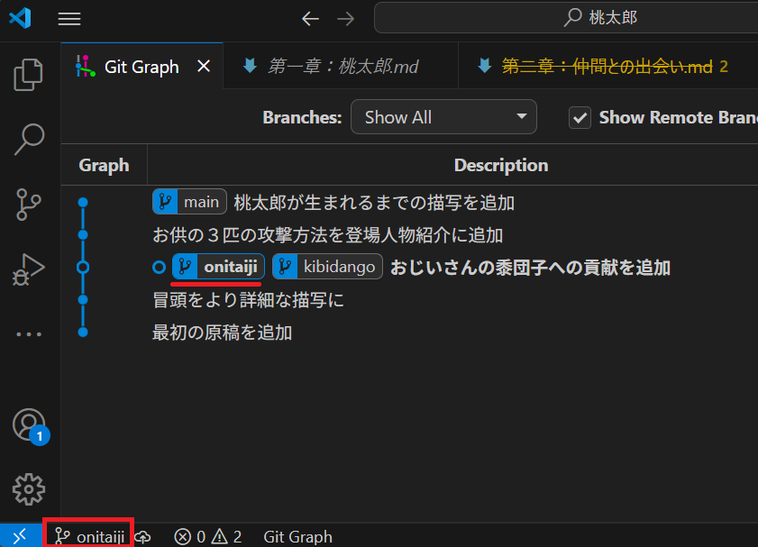

ブランチ
このページでは、複数の作業環境を管理するための機能「ブランチ」について説明します。
今どこにいるか？：HEAD
gitでは「現在のフォルダの中身は変更履歴上のどのタイミングのものか」、つまり現在のフォルダの状態のことをHEADと呼びます。HEADの位置は、GitGraph上では「○」で表示され、コミットメッセージが太字になります。
HEADの位置を変えることで、フォルダの中身を丸ごと過去の状態に戻すことができます。この操作をcheckoutと呼びます。HEADの位置を変えるには、GitGraph上の適当なコミットメッセージの上で右クリックし、「Checkout」を選びます。警告が出ると思いますが、無視して「Yes, checkout」を選んでください。
すると、HEADを示す「○」の位置、太字のコミットが切り替わったはずです。エクスプローラーからファイルを開くと、ファイルの中身がこのコミット時点の状態に戻っているのが確認できるはずです。このように、HEADの位置を動かすことで、gitは任意の時点のフォルダを簡単に復元することができます。試しに、いくつかのコミットをチェックアウトして、最新の状態から一番最初の状態まで、フォルダの中身を切り替えられることを確認してください。
checkoutを使ってHEADを動かせばフォルダの中身を巻き戻すことはできますが、実は普段の操作では特定のコミットへのcheckoutはほとんど行うことはありません。これは、gitにはブランチと呼ばれるより便利な仕組みがあるためです。
履歴の枝分かれ：ブランチ
ここまで、コミットは一本の履歴上に連なっていました。しかし、このような履歴が一本道の構造だと以下のような問題が起きます。
- ある機能のために変更したら、他の機能にも影響を与えて動かなくなってしまった
- ある機能の開発のために行われた変更がどれなのか、変更履歴から見つけにくい
- バグが発生したことに気づいたが、いろいろ触りすぎていてどの変更が原因かわかりにくい
これらの問題は、「安定して利用したい」「バグを治したい」「新しい機能を追加したい」など、異なる目的での変更作業をすべて同じ履歴の中で行ってしまっていることが原因です。
そこで、gitでは目的ごとに作業環境を丸ごと切り替えるための機能として、ブランチが用意されています。イメージとしては「機能A開発用の環境」「機能B開発用の環境」「バグの修正環境」「計算に使う安定版環境」それぞれにブランチを用意し、目的に応じて切り替えながら履歴を伸ばしていくような使い方です。
GitGraphで見ると、最新のコミットに main と書かれたラベルがついています。実は、これまではデフォルトの「main」という名称のブランチを利用していました。

ブランチは必要に応じて自由に作ることができます。ブランチを作る際には、まず作業環境として履歴上のどのタイミングのフォルダ状態（すなわち、どのコミット）から始めるかを選択します。新しくブランチを作るには、GitGraph上で選択するコミットのメッセージ上で右クリックし、Create Branchを選択します。ポップアップに適当な名前を入力して「create branch」を選ぶと、新たなブランチが作成されます。
新たなブランチを作成することを、俗に「ブランチを切る」とも呼びます。
新しく作成するのに「枝を切る」のは少し不思議な気がしますが、おそらく小切手を切る、伝票を切るのような「発行する」意味合いでの表現が転じたものと思われます。
現在のフォルダの状態HEADは、GitGraph上でブランチのラベルをダブルクリックすることで切り替えることができます。HEADがあるブランチは、ブランチラベルが太字になります。画面下ステータスバーの左端にも現在HEADがあるブランチが表示されています。
checkoutを使ったとき同様、HEADの移動に伴ってフォルダの状態も切り替わっていることを確認してください。つまり、ブランチを切り替えることで、フォルダの状態を瞬時に切り替えられるのです。
ブランチをダブルクリックする操作自体も「checkout」と呼びます。移動先がコミットでもブランチでも、HEADの移動はすべてcheckoutなのです。
新たなコミットは、現在HEADがあるブランチに対して反映されます。例えば、先ほど作成した「kibidango」ブランチにHEADがある状態で新たな変更をコミットすると、kibidangoブランチが一つ進み、mainブランチと履歴が「枝分かれ」します。つまり、kibidangoブランチ上では、mainブランチには影響を与えることなく、編集しコミットを行えるわけです。
このように、ブランチは目的ごとの「作業環境」として機能します。目的ごとにブランチを作成することで、他のブランチには影響を与える心配をせず、その目的に集中して更新作業を行うことができるわけです。
上でも少し触れましたが、HEADの位置は「コミット」の場合と「ブランチ」の場合、両方があります。
例えば、ブランチのラベルをダブルクリックせず、そのブランチがあるコミットをcheckoutすると、HEADはコミット上にある状態になります。この時、ブランチ名は太字にならず、ステータスバーにもブランチ名が表示されません（代わりにコミットIDと呼ばれる16進数が表示されています）。
これは、HEADが単にコミットの位置情報なのではなく、「今から行う変更はどのブランチに反映するか」を決めるものだからです。わかりやすいのは複数のブランチが同一のコミット上にある場合でしょうか。以下の例の場合、「kibidango」ブランチと「onitaiji」ブランチが両方同じコミット上にあり、この例では「onitaiji」ブランチ上にHEADがあることがわかります。この場合、新たなコミットは「onitaiji」ブランチに追加されます。

このように、ブランチの選択はコミットを置く先の選択という点でも重要です。
なお、HEADがブランチにない状態でもコミット自体は可能ですが、この状態でのコミットは履歴が孤立しやすく、後で見失う可能性があるため、通常は避けるべきです（後述）。特定のコミットへのcheckoutは、せいぜい「一時的に過去のファイルの中身を確認するため」に使うくらいにとどめ、原則として通常はHEADはブランチに置きましょう。新たにHEADにしたいコミットが存在するなら、多くの場合そのコミットに新たなブランチを作成すべきです。
不要なブランチの削除
ブランチが不要になった場合、ブランチラベルを右クリックし「Delete Branch」を選ぶことで削除することができます。なお、現在HEADを置いているブランチは削除できないので、まず別のブランチにHEADを移してから削除しましょう。
なお、そのブランチより先に他のブランチ等がない状態でブランチを削除すると、そこまでの履歴も一緒に消えてしまいます（正確には非表示になる：下記参照）。履歴の内容を失いたくない場合は、ブランチを削除してはいけません。
履歴の保存を目的としているgitでは、過去のコミットが消えてしまうことはほぼありません。しかし、過去のコミットすべてを表示していると、履歴表示が煩雑になることがあるため、gitでは基本的に「使用されない」コミットは非表示となります。具体的には、当該コミットより先にブランチがなく、タグ（特定のコミットに着けられるマーク、のちのページで扱います）もない状態では、非表示となります。
例えば、以下の状態で「kibidango」ブランチを削除すると、上の三つのコミットは非表示となります。これは、ブランチを削除したことで、これら三つのコミットの先にブランチがなくなってしまうためです。
同様の事故は、ブランチではなくコミットにHEADを置いている場合に良く起きます。以下の例では最初のコミットにHEADを置いてから、いくつかのコミットを追加した状態です。
この状態では、追加された最新の二つのコミットはどのブランチにも属していないため、mainやkibidangoなどのほかのブランチにHEADを移すだけで履歴から消えてしまいます。
これが、HEADは基本としてブランチに置くべき理由です。checkoutを使ってHEADをコミットに置いてしまうと、ブランチへの切り替えだけで簡単に履歴が消えてしまうのです。
非表示になってしまっても、あわてる必要はありません。GitGraphの右上にある歯車マークの「設定」を開き、「Include commits only mentioned by reflog」にチェックを入れてください。
これで、非表示になっているものも含めてすべてこれまでのすべてのコミットが表示されます（下図右）。非表示の場合（下図左）と比べて表示されるコミットが大きく増えているのがわかるでしょうか。